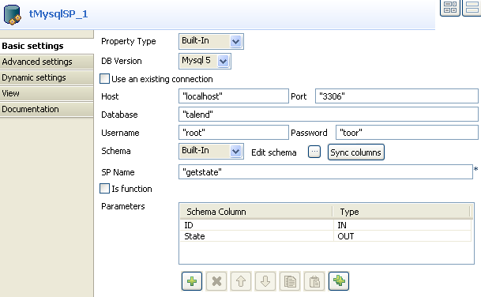

Scenario: Finding a State Label using a stored procedure
The following job aims at finding the State labels matching the odd State IDs in a Mysql two-column table. A stored procedure is used to carry out this operation.

- Drag and drop the following components used in this example: tRowGenerator, tMysqlSP, tLogRow.
- Connect the components using the Row Main link.
- The tRowGenerator is used to generate the odd id number. Double-click on the component to launch the editor.
- Click on the Plus button to add a column to the schema to generate.
- Check the Key box and define the Type to Int.
- The Length equals to 2 digits max.
- Use the preset function called sequence but customize the Parameters in the lower part of the window.
- Change the Value of step from 1 to 2 for this example, still starting from 1.
- Set the Number of generated rows to 25 in order for all the odd State id (of 50 states) to be generated.
- Click OK to validate the configuration.
- Then select the tMysqlSP component and define its properties.
- Set the Property type field to Repository and select the relevant entry on the list. The connection details get filled in automatically.
- Else, set manually the connection information.
- Click Sync Column to retrieve the generated schema from the preceding component.
- Then click Edit Schema and add an extra column to hold the State Label to be output, in addition to the ID.
- Select the encoding type on the list.
- Type in the name of the procedure in the SP Name field as it is called in the Database. In this example, getstate. The procedure to be executed states as follows:
DROP PROCEDURE IF EXISTS `talend`.`getstate` $$
CREATE DEFINER=`root`@`localhost` PROCEDURE `getstate`(IN pid INT, OUT pstate VARCHAR(50))
BEGIN
SELECT LabelState INTO pstate FROM us_states WHERE idState = pid;
END $$ - In the Parameters area, click the plus button to add a line to the table.
- Set the Column field to ID, and the Type field to IN as it will be given as input parameter to the procedure.
- Add a second line and set the Column field to State and the Type to Out as this is the output parameter to be returned.
- Eventually, set the tLogRow component properties.
- Synchronize the schema with the preceding component.
- And check the Print values in cells of a table box for reading convenience.
- Then save your job and execute it.




The output shows the state labels corresponding to the odd state ids as defined in the procedure.